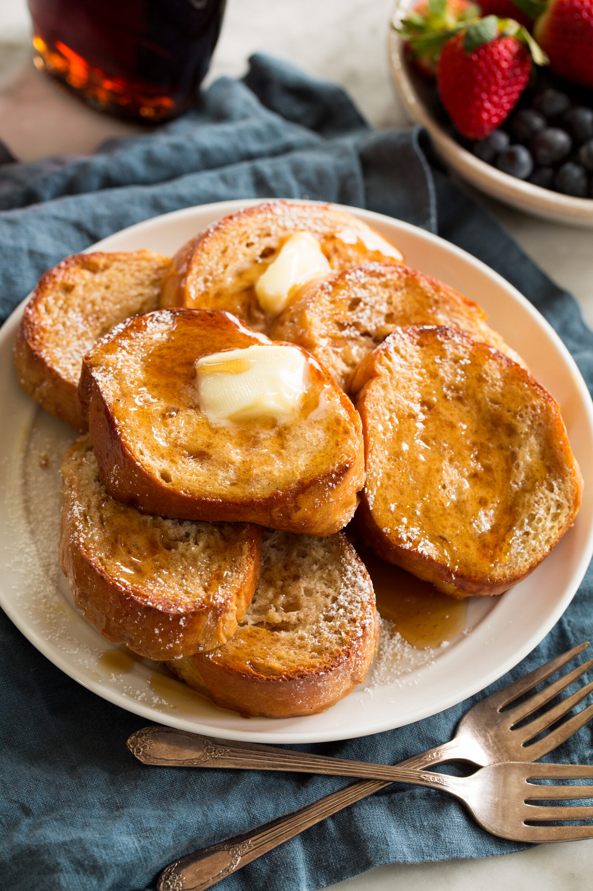

Baked french toast

Description
The great thing about this baked French toast recipe that sets it apart from others is that there’s
no need to soak the French toast overnight or even for hours in the fridge.
It’s baked right after it’s prepared.
And this version doesn’t require chopping into small cubes or adding a crumble topping (like a French toast casserole,
which can be delicious but requires more effort).
This version is very similar to the real thing (like this French toast)
and it’s also rich and delicious like bread pudding (just not as sweet and custard-like).
Ingredients
- Butter: A fair amount of butter is used to grease the baking dish to prevent sticking and add flavor.
- Eggs: The protein in eggs solidifies once cooked and binds and holds ingredients together, they are an essential ingredient for French toast.
- Cinnamon: A fair amount of cinnamon is used to add that delicious sweetly spiced goodness.
- Milk: This is the foundation of the custard to add moisture.
- Heavy cream: In addition to milk heavy cream is added for richness.
- Granulated sugar: This sweetens the French toast just lightly, leaving room for a sweet syrupy finish.
- Vanilla extract: Vanilla always adds a nice light background flavor to oven baked French toast.
- French bread: This recipe uses the soft bakery French bread. You’ll need 1 1/2 loaves, plus a few more slices if needed to use up custard.
Steps
- Heat oven, prepare baking dish: Preheat oven to 350 degrees. Brush a 13 by 9-inch baking dish with butter.
- Mix eggs and spice: In shallow dish whisk together eggs with cinnamon vigorously until very well blended.
- Blend in remaining liquids: Pour in milk, cream, sugar and vanilla extract and whisk until well blended.
- Soak bread in custard: Dip slices of French bread into egg mixture letting it soak briefly (it should soak almost nearly through, it may be helpful to gently squeeze like a sponge to absorb into center and gently squeeze some of the excess out).
- Align slices in baking dish: Transfer slices to baking dish and place in snug in rows overlapping. Repeat dipping and aligning process until all of the slices are used up.
- Bake til cooked through: Transfer to oven and bake uncovered for 40 to 45 minutes until baked through. Note that you may need to tent with foil during the last 10 to 15 minutes if you find it’s browning too much on top depending on your oven.
- Slice and serve: Let cool slightly then cut into squares and serve with maple syrup or other syrup or topping of choice.